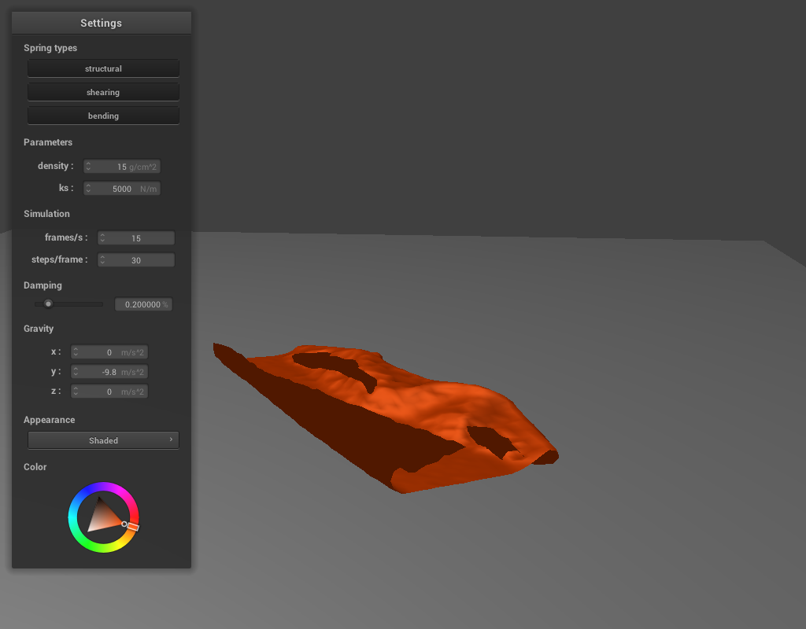

CS 184: Computer Graphics and Imaging, Spring 2018
Project 4: Cloth Simulator
MICHAEL GIBBES, CS184-ABY
Overview
One major problem in computer graphics (one that I especially want to explore in my career!) is realistically simulating objects, materials, and other aspects of the real world. This project focuses specifically on simulating cloth movement. The underlying data structure for this endeavor is the mass/spring mesh, which is implemented in the first part. The proceeding parts attempt to produce interesting visual effects by considering the forces acting on points of the mesh, collisions with other objects, and self-collisions. Self-collisions in particular present a challenge because in order to check efficiently, some careful data organization is required (i.e. hashing).
Part 1: Masses and Springs
The goal here was to initialize a "net" of mass points, or virtual representations of weights for the cloth. Each point is connected to other points by 3 different types of springs: structural (vertical/horizontal), shearing (diagonal), and bending (like structural but connects every other mass instead of adjacent ones).
Here is a 50x50 mesh of connected mass points from a couple of angles:
We'll also observe the difference between the springs:
|
Structural/Bending Only
|
Shearing Only
|
All
|
As expected, showing all structural/bending springs results in a boxy mesh, while showing only shearing springs results in a boxy mesh diagonal to the previous one.
Part 2: Simulation via Numerical Integration
This step aims to add some movement to the mass/spring mesh using acceleration forces (gravity) and spring forces (pressure to maintain original spring length). Forces apply to all point masses except pinned ones. On each timestep of the simulation, the position of each mass gets updated according to the forces acting upon it, with the constraint that the spring can't stretch more than 10% of its rest length (SIGGRAPH 1995 Provot). This prevents the cloth from becoming unreasonably deformed. I tried the simulation without the constraint, and the result was not unlike watery pizza dough.
An exploration of differing properties with a 2-pinned cloth:
- Spring Constant (ks): This constant determines how strong the spring forces are.
At 50 (N/m), the cloth droops, kind of like a synthetic, stretchy fabric.
At 5000 (N/m), the structure is stiffer, more like a tablecloth.
And at 50000 (N/m), the cloth barely yields to gravity.
|
50 (N/m)
|
5000 (N/m)
|
50000 (N/m)
|
- Density (ks): The density of the cloth affects its mass, so unlike the spring constant, increasing density should cause more visible gravity effects.
At 1 (g/cm^2), the dip in the cloth is highest, and the mesh is prone to move about wildly and fall slowly before settling.
The default, 15 (g/cm^2), is shown for comparison.
At 100 (g/cm^2), faster fall and lower dip.
 1 (g/cm^2)
1 (g/cm^2)
|
15 (g/cm^2)
|
100 (g/cm^2)
|
- Damping: This determines how quickly the velocity of each point dies due to friction and heat loss.
With a value of 0%, the mesh quickly builds velocity from the drop and never stops wildly swaying about.
20% is shown for default.
At much higher percentages, like 80% and beyond, the cloth flops down slowly without much bounce.
Damping does not affect the resting state, but very low, non-zero percentages will take a long time to converge. Below are screenshots mid-fall:
Finally, 4-pinned cloth at default parameters, also in orange since it's such an amazing color.
|
A magnificent 4-pinned cloth.
|
Part 3: Handling Collisions with Other Objects
To make the interaction more engaging without having to pin cloth corners, other primitives that emulate solid objects can be placed in the scene. The first is the sphere. To deal with sphere collisions, every point mass gets tested against the sphere, and if there is a collision, the point mass gets bumped out to rest on the surface of the sphere using the normal at the closest point of collision. The resting state of an orange cloth draped over a sphere at different densities:
|
500 (N/m)
|
5000 (N/m)
|
50000 (N/m)
|
Note how as the spring gets stiffer, the cloth conforms less to the sphere, and fewer folds form. The awkward angle of the folds for the stiffest spring in the 3rd screenshot unfortunately reveals the mesh (see how the shading is jagged). Also interesting to note -- after waiting a tad longer, the stiffest cloth will actually slowly slide off the sphere. Its position is destabilized by its rigidity.
Planes are similar to spheres except instead of checking whether a point is "inside", collision corrections are applied when point masses "cross" the plane. A small offset gets subtracted from the correction to make sure points will be re-detected. As always, the cloth could be nothing but orange:
Part 4: Handling Self-Collisions
This part aims to allow the mesh to realistically fold on itself without clipping. The result isn't perfect since it doesn't account for friction or heat loss, but it is satisfying to watch the cloth fold in on itself more realistically.
If you were to check for collisions on every point mass to every point mass, the runtime would be O(n^2) where n is the number of point masses. Since that's pretty bad, we use a special "spatial" hashmap. The entire region is divided up into 3D boxes that are the dimensions of the original resting length of a single spring times 3.0. Points in the same regional box get hashed into the same mapping. Because it's likely the cloth won't deform so badly that it's contained inside one of these small 3D boxes, the algorithm usually only checks each point mass against 1-5 other point masses. Thus, the runtime actually ends up being roughly O(n), which is really the best you could do without approximations.
Below is the progression of a cloth folding in on itself.
|
Initial position.
|
Halfway fall.
|

Resting position.
|
An exploration of how the cloth falls at different densities and stiffness (compare rest image to above):
- Stiffness: At very low stiffness, the cloth folds in a more concentrated manner and becomes turbulant as a lot of collisions happen. At higher stiffness, it spreads out and comes to a rest state faster.
|
Low stiffness.
|
High stiffness
|
- Density: With lower density, the structure falls more slowly, but its resting state is not as flat. With higher density, it falls quickly, and its resting state is flat and in a state of turmoil.
|
Low density.
|
High density
|
Overall, this has been a fun exploration of simulating fabric, of course not without a few bugs and discrepancies (i.e. generating random z-coordinates so that the cloth actually falls in on itself, troubleshooting collision correction vectors, etc.). I took one final screenshot of the cloth in a nice semi-fall.
|
A goodbye to the 4th and last CS 184 project.
|